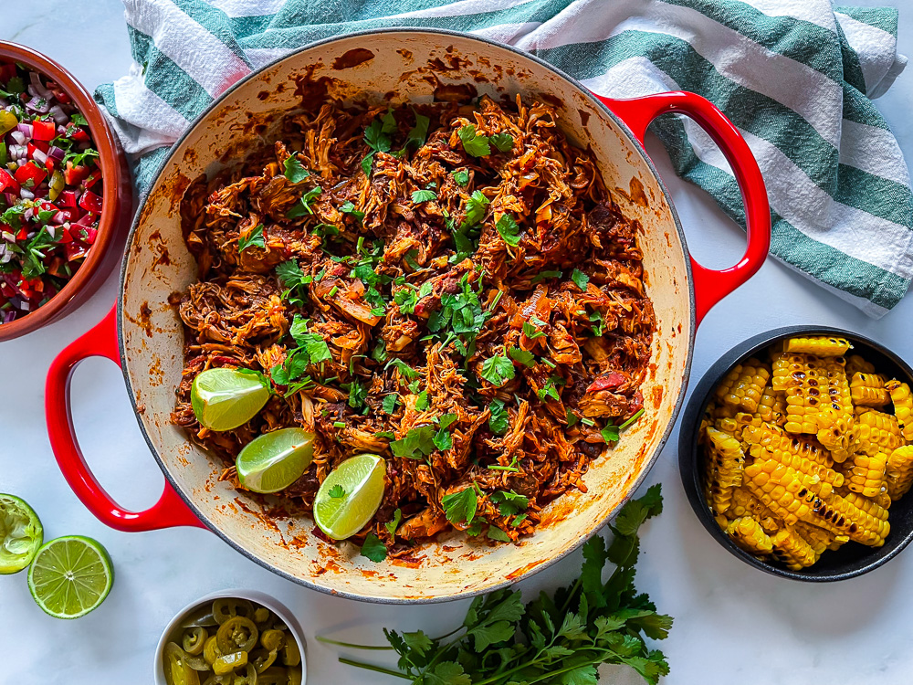

Lime Cilantro Chicken
Description
Delicious slow cooker cilantro lime chicken
Ingredients
- 16 oz jar of salsa
- 1.25 oz package dry taco seasoning mix
- 1 medium lime, juiced
- 3 tablespoons chopped fresh cilantro
- 3 pounds skinless, boneless chicken thighs
Steps
- Gather all ingredients.
- Stir salsa, taco seasoning, lime juice, and cilantro together in a slow cooker until well combined. Add chicken and spoon salsa mixture over top to coat.
- Cover and cook until chicken is no longer pink in the center and the juices run clear, on low for 6 to 8 hours or high for 4 hours. Inside should read at least 165 degrees F.
- Shred chicken in the pot with two forks, then mix with the sauce.
- Enjoy!